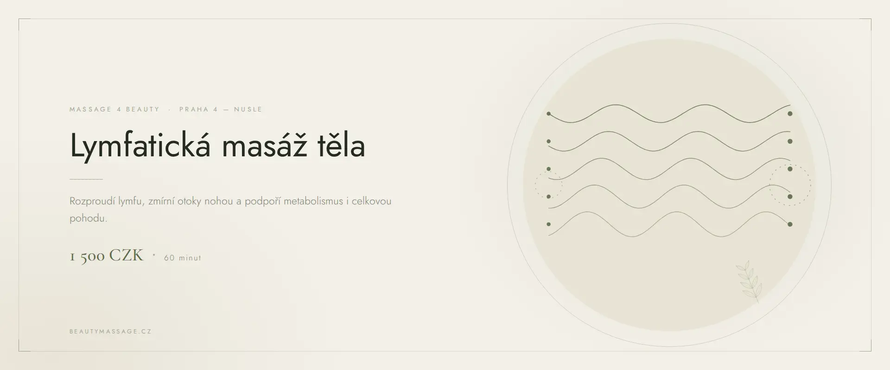

Body massage · Prague 4
Lymphatic Massage in Prague
Manual lymphatic drainage that gets the lymph moving, eases swelling and gives your legs their lightness back. Gentle, slow and deeply calming — no pain, no machines.
What lymphatic massage is
Lymphatic massage — also called lymphatic drainage — is a gentle manual technique that supports the natural flow of lymph through slow, rhythmic movements. Unlike a classic massage, it does not press firmly into the muscle. It works just beneath the skin, where the lymphatic vessels run, which makes it pleasant and pain-free.
Lymph carries excess water and waste away from the tissues. When its flow slows down — through long hours of sitting or standing, heat, or after an injury — swelling, heavy legs and tired-looking skin follow. Manual lymphatic massage gently restarts that flow.
How the massage works
- A short consultation We go through your health, any swelling and what you want from the visit. It takes a few minutes.
- Opening the lymph nodes The massage always begins at the neck and collarbone, so the lymph has somewhere to drain.
- The drainage itself Slow strokes from the limbs towards the heart — legs, abdomen and arms, as you need.
- Settling and water You rest for a moment at the end. I recommend drinking at least two litres of water during the day.
What lymphatic massage does
- reduces swelling in the legs, ankles and abdomen
- relieves the feeling of heavy, tired legs
- supports immunity and the removal of waste products
- improves the look of the skin and softens cellulite
- speeds up recovery after sport and after surgery
- deeply calms the nervous system and improves sleep
Who it suits
Full-body lymphatic massage suits anyone who sits or stands for long hours, has swollen legs, is heading into short-skirt season or is recovering from athletic strain. Targeted lymphatic massage of the legs and of the abdomen are just as popular.
When we do not massage
- acute inflammation or fever
- thrombosis and vein inflammation
- cancer under active treatment
- heart or kidney failure
- the first trimester of pregnancy
Not sure? Call me before booking on +420 721 761 411 and we will talk it through.
Price of lymphatic massage
Frequently asked questions
What is lymphatic massage?
Lymphatic massage — also called lymphatic drainage — is a gentle manual technique that supports the natural flow of lymph through slow, rhythmic movements. Unlike a classic massage, it does not press firmly into the muscle. It works just beneath the skin, where the lymphatic vessels run, which makes it pleasant and pain-free.
How often should I come for lymphatic massage?
For swelling and heavy legs I recommend a course of 5 to 10 massages, ideally once or twice a week. One massage a month is then enough to hold the result.
Does lymphatic massage have side effects?
For a healthy person it is very gentle. Afterwards you may need to urinate more, feel mildly tired or thirsty — a natural response to the lymph getting moving, and it passes during the day.
Is lymphatic massage safe during pregnancy?
Gentle lymphatic massage of the legs often helps with swelling in pregnancy, but it always needs your doctor's approval first. I do not massage during the first trimester.
How does it differ from a classic massage?
A classic massage works deeper into the muscle and brings blood to the area. Lymphatic massage is the opposite — very gentle and slow, guiding lymph towards the lymph nodes. That is why your muscles are not sore afterwards.
Can I book online?
Yes. Fill in the booking form on the home page or call +420 721 761 411. I usually reply the same day.
Book your lymphatic massage
The studio is in Prague 4 — Nusle, a short walk from Pankrác and Vyšehrad. Booking online takes a minute.